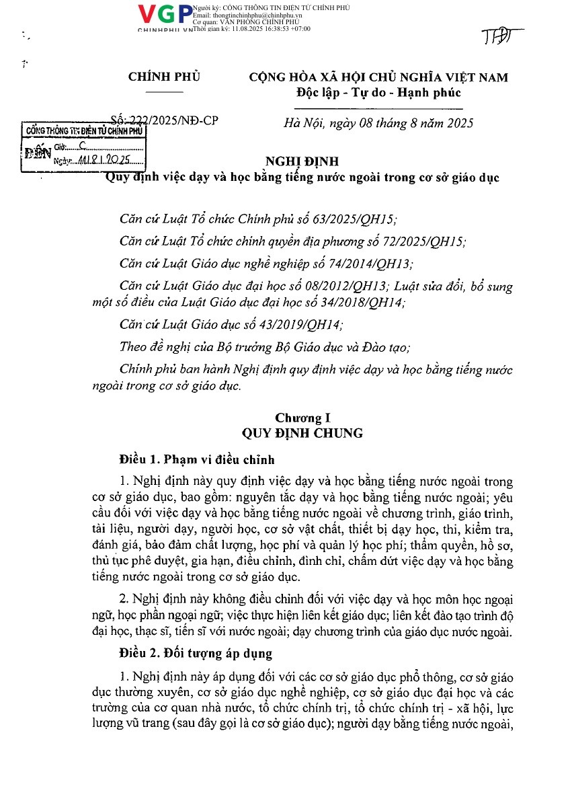

Decree 222/2025/NĐ-CPNghị định 222/2025/NĐ-CP
Teaching and learning through foreign languages in educational institutionsQuy định việc dạy và học bằng tiếng nước ngoài trong cơ sở giáo dục
Effective from 25 September 2025Hiệu lực thi hành từ 25/09/2025 Government · Issued 8 August 2025Chính phủ · Ban hành 08/08/2025 PDF · 29 pages / trang · Vietnamese / Tiếng Việt · 1.04 MBRequirements for programmes, teachers, learners, quality assurance, and procedures for teaching through foreign languages.Quy định về chương trình, người dạy, người học, bảo đảm chất lượng và thủ tục tổ chức dạy học bằng tiếng nước ngoài.
Source / Nguồn: Government Portal / Cổng Thông tin điện tử Chính phủ.